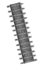
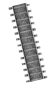

FULL
SPEED
AHEAD

TRAINWORLD

DISCOVER THE EVOLUTION OF HIGH SPEED LINES

Come aboard, pick a seat and enjoy the train ride through the evolution of high speed lines in Belgium
High-Speed Lines

PBKAL

1986
At the annual conference of the Ministers of Transport for France, Germany, Belgium and The Netherlands, a high-speed network between Paris – Brussels - Cologne/Amsterdam (PBKAL) was discussed for the first time. The L referred to London, which would also be connected to this network via the Channel Tunnel.


Channel railway tunnel in France
1 YEAR LATER...
A year later, France greenlit a high-speed line from Paris to the Channel Tunnel/Belgian border. In November 1989, 4 Ministers agreed on the HSL in The Hague. Belgium approved it in 1990. Concurrently, construction of the 50km Channel railway tunnel was in full swing.
ATTENTION
We are entering the Channel Tunnel

It's so dark in here, can you turn on the lights of our train?

LOTS OF
COMPROMISE
Yet again, a compromise was reached. In Flanders, with the exception of the Antwerp - Dutch border section, no high-speed train lines would be constructed.
LEMBEEK - FRENCH BORDER
ANTWERP - DUTCH BORDER
Belgium
new high-speed lines
December 14, 1997
72KM

Lembeek
French border
December 15, 2002
63KM
Leuven
Liège
June 12, 2009
6.5KM
Chênée
Walhorn
December 13, 2009
+35KM
Antwerp
Dutch border

CHÊNÉE - WALHORN
LEUVEN - LIÈGE
The Monster
A 'triangle' was planned for the HST to The Netherlands and Germany. A resistance to this MONSTER was threatening in the Campine region, while Wallonia was unwilling to countenance Liège being left out of the HST.
In16YEARS
Belgium became the first European country with a full 300 km/h High-Speed Line (HSL) network, costing over 5 billion euros—the highest investment since the 1958 World Expo.

The funds covered high-speed lines, the 3.8 km-long underground North-South link in Antwerp, and upgrades to Brussels-Midi, Antwerpen-Centraal, and Liège-Guillemins stations.
THE RAILWAY BARRIER IS CLOSED AND WILL OPEN SOON
GAIN AS MUCH SPEED BY ANSWERING CORRECT TO PASS BEFORE IT’S TOO LATE

Belgian
speed trains
The city-centric high-speed train, outperformed air transport on the Brussels - Paris Thalys route. Eurostar connects Brussels to London in two hours. Since 1995, domestic railways, with expanded services, infrastructure investments, and comfortable double-decker trains, have steadily grown their customer base.

Belgian Railways
Redefined
SNCB - group
To remain in line with European regulations, the NMBS/SNCB, that was founded in 1926, was split into three companies on January 1, 2005: the coordinating SNCB-Holding, railway operator NMBS/SNCB and infrastructure manager Infrabel. Together, they formed the SNCB-Group.
SNCB GROUP
THE SPLIT
The federal parliament carried out a new restructuring in 2014, aimed at more efficient management and better operational performance. NMBS/SNCB and Infrabel became two independent companies, with the responsibilities of SNCB-Holding shared out between both.
NMBS, operates the passenger trains and maintains the rolling stock. It also owns all station buildings and manages all the stations and stops.
Infrabel, manages and modernises the railway infrastructure, controls train traffic and is responsible for the allocation of train paths to all railway operators.
HR-Rail, legal employer of the entire complement of railway personnel. They offer an integrated HR service to NMBS/SNCB and Infrabel, including social consultation and recruitment.
OH NO!
A WINDSTORM CAUSED THE TRACKS TO FLY INTO PIECES!
QUICKLY BECOME AN INFRABEL EMPLOYEE TO REPAIR THE RAILS!
 

Investments
21st century
21st
century
NMBS/SNCB and Infrabel continue to invest in new stock modernising the railways.
light-weight train
NMBS/SNCB brought a new range of electric units into service for local and regional passenger transport. This consists of 305 three-part electric units of the ‘Desiro Main Line’ type. These are light-weight trains with a low-floor section, making them supremely suited to routes with many stops.
The Diabolo, providing northern access to Zaventem (Brussels Airport), was completed in 2012. It includes a new railway line between Mechelen and Schaerbeek, linked to the airport via a railway triangle.
Transform
Since 2006, the Brussels suburban network (RER) has undergone significant transformations, including line expansions, new railway bridges, restoration of old stops, and the construction of the Schuman-Josaphat Tunnel. The RER suburban network was officially opened on December 13, 2015.
NMBS/SNCB debuted the first M7 carriages in 2020, totaling 445 double-decker carriages with 50,000 seats. The design, informed by a thorough traveler survey, won the public prize at the esteemed Henry van de Velde Awards in January 2019. The carriages will also incorporate cutting-edge safety systems.
Discover more
DISCOVER
MORE
Do you want to learn more about the history of trains? Watch an old train from the inside or drive a virtual train yourself?
act quickly and book your tickets for Train World, Belgium’s biggest train museum!